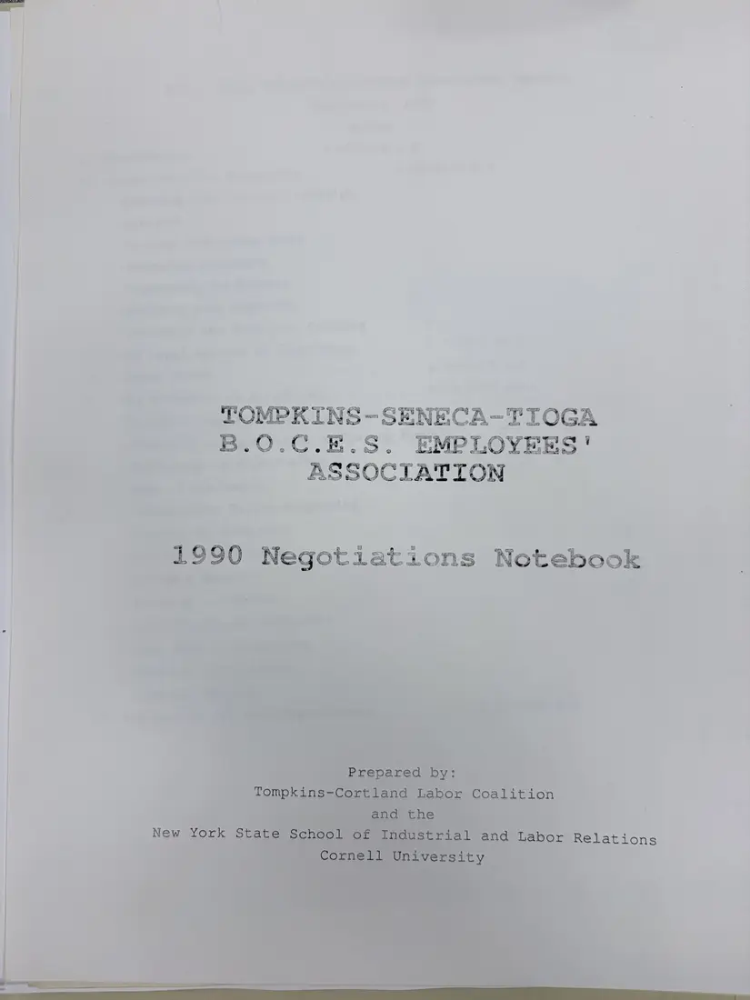
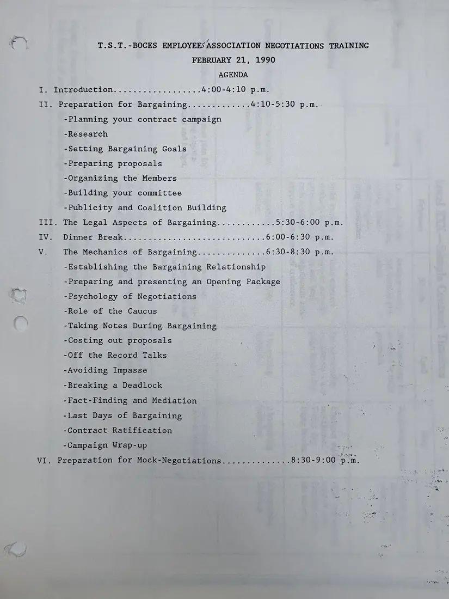
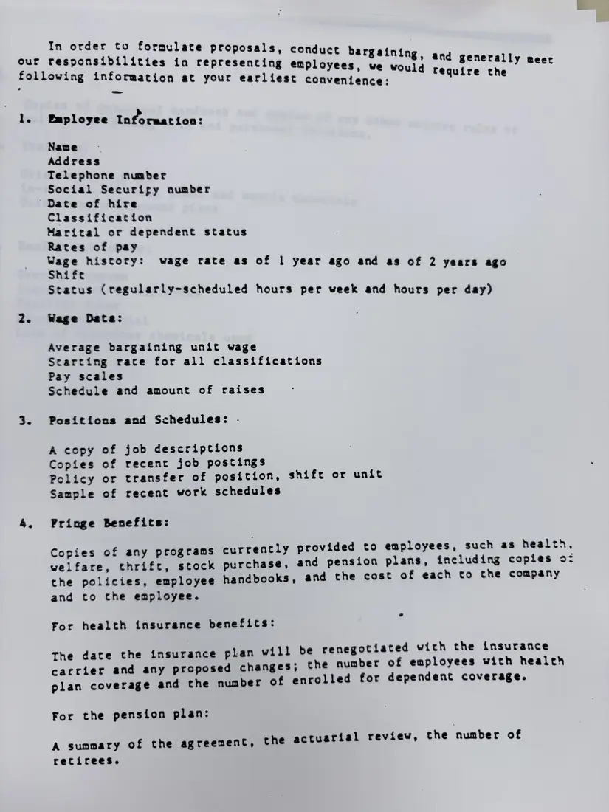
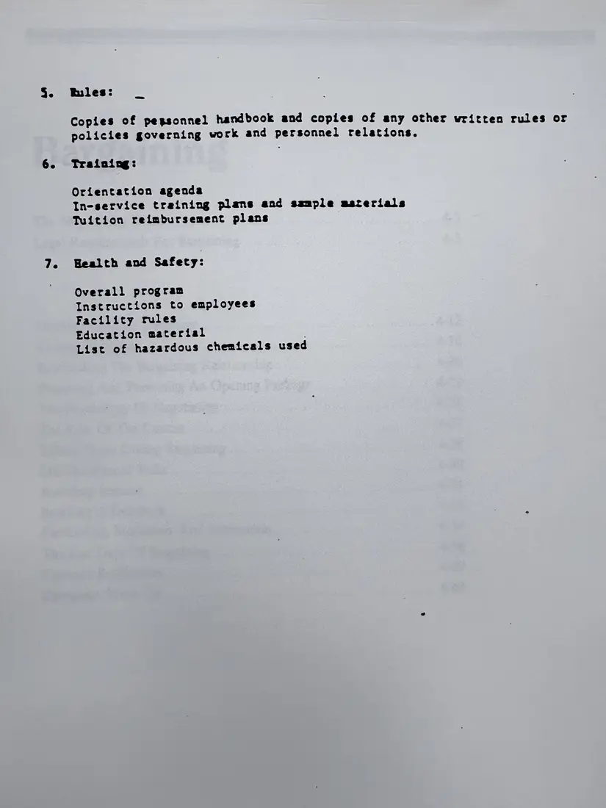
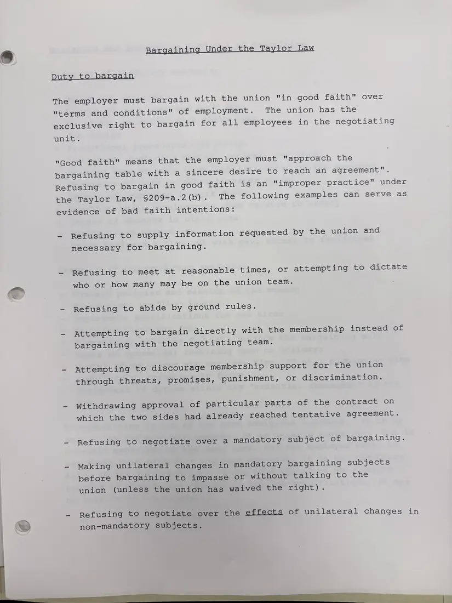
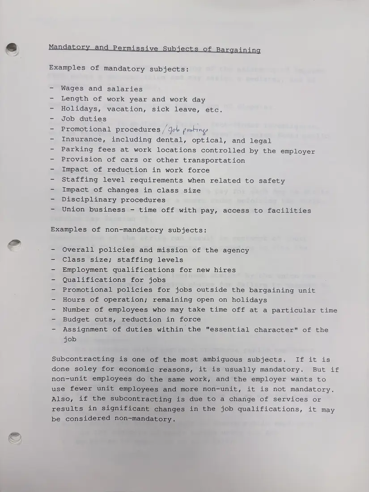
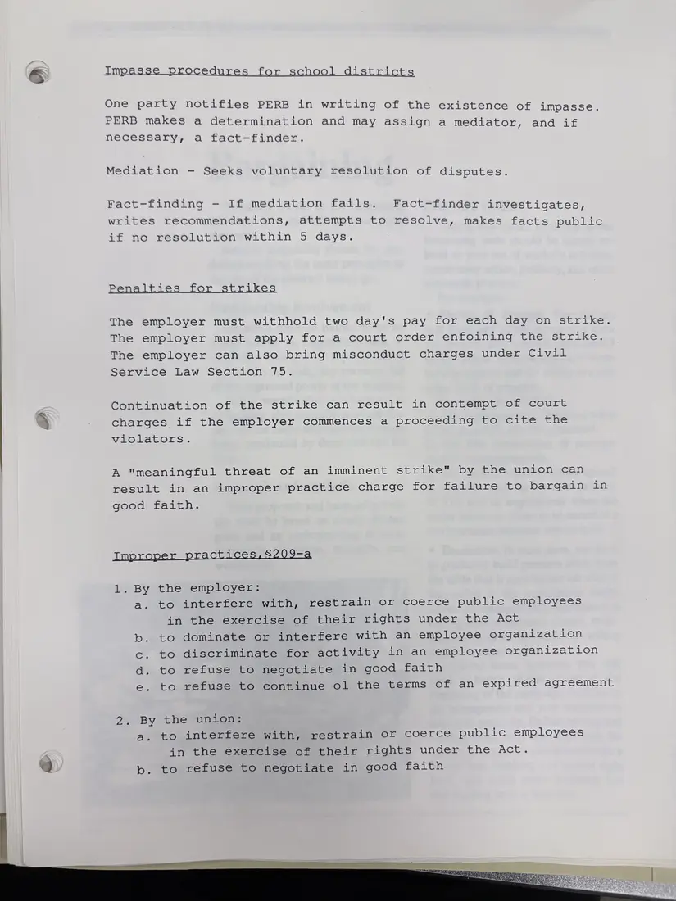

Report, 7 pages
1990 Negotiations Notebook, Tompkins-Seneca-Tioga BOCES Employees' Association
February 21, 1990
A training notebook the Coalition and Cornell's ILR School prepared for the BOCES Employees' Association before its 1990 contract talks. These pages hold the cover, the agenda for an evening negotiations training on February 21, 1990 (preparing for bargaining, the legal side, the mechanics of bargaining, and a mock negotiation), a model request to the employer for wage, benefit, and personnel information, and typed notes on bargaining under New York's Taylor Law: the duty to bargain in good faith, mandatory and non-mandatory subjects, impasse procedures for school districts, strike penalties, and improper practices.
The notebook also reproduces pages of a union's published bargaining manual; those pages are withheld for copyright. A second photograph of the cover is not shown.
Download or cite this itemPages


(open zoom view)Read the page text (machine-read, many errors)
This text was generated automatically from the photograph and has not been corrected. The image is the authoritative record.
~~‘ TOMPKINS-SENECA-TIOGA >) 8.0.C.E-S. EMPLOYEES' oo 6 | «UASSOCIATION?


(open zoom view)Read the page text (machine-read, contains errors)
This text was generated automatically from the photograph and has not been corrected. The image is the authoritative record.
T.S.T.-BOCES EMPLOYEES ASSOCIATION NEGOTIATIONS TRAINING FEBRUARY 21, 1990 AGENDA ee litmoduction....... 1... ++ se os 4:00-4:10 p.m. Il. Preparation for Bargaining............. 4:10-5:30 p.m. -Planning your contract campaign -Research -Setting Bargaining Goals -Preparing proposals -Organizing the Members -Building your committee -Publicity and Coalition Building III. The Legal Aspects of Bargaining............ 5:30-6:00 p.m. iy. I Waliongvese - icte¥sille 3 5 3 aay ea ens meee a ee 6:00-6:30 p.m. We The Mechanics of Bargaining.............. 6:30-8:30 p.m. -Establishing the Bargaining Relationship -Preparing and presenting an Opening Package -Psychology of Negotiations -Role of the Caucus -Taking Notes During Bargaining -Costing out proposals -Off the Record Talks -Avoiding Impasse -Breaking a Deadlock -Fact-Finding and Mediation -Last Days of Bargaining -Contract Ratification -Campaign Wrap-up ey VI. Preparation for Mock-Nepotiations........:..-:.- 8:30-9:00 p.m.


(open zoom view)Read the page text (machine-read, mostly readable)
This text was generated automatically from the photograph and has not been corrected. The image is the authoritative record.
In order to formulate proposals, conduct ba our responsibilities in representing employees, Baining, and generally meer following information at your earliest convenience: we would require the Eaployee Information: Name Address Telephone number Social Securify number Date of hire Classification Marital or dependent status Rates of pay Wage history: wage rate as of 1 year ago and as of 2 years ago Shife Status (regularly-scheduled hours per week and hours per day) Wage Data: Average bargaining unit wage Starting race for all classifications Pay scales Schedule and amount of raises Positions and Schedules: . A copy of job descriptions Copies of recent job postings Policy or transfer of position, shift or unit Sample of recent work schedules Fringe Benefits: Copies of any programs currently provided to employees, such as health, welfare, thrift, stock purchase, and pension plans, including copies of the policies, employee handbooks, and the cost of each to the company and to che employee. For health insurance benefits: e renegotiated with the insurance the number of employees with health lled for dependent coverage. The date the insurance plan will b carrier and any proposed changes; plan coverage and the number of enro For the pension plan: e actuarial review, the number of A summary of the agreement, th recirees.


(open zoom view)Read the page text (machine-read, mostly readable)
This text was generated automatically from the photograph and has not been corrected. The image is the authoritative record.
Bules: _ Copies of pegsonnel handbook and copies of any other written rules or policies governing work and personnel relations. Training: Orientation agenda In-service training plans and sample materials Tuition reimbursement plans Health and Safety: Overall program Instructions to employees Facility rules Education material List of hazardous chemicals used


(open zoom view)Read the page text (machine-read, mostly readable)
This text was generated automatically from the photograph and has not been corrected. The image is the authoritative record.
Bargainin nder the Taylor Law Duty to bargain The employer must bargain with the union "in good faith” over "terms and conditions" of employment. The union has the exclusive right to bargain for all employees in the negotiating unit. "Good faith" means that the employer must "approach the bargaining table with a sincere desire to reach an agreement”. Refusing to bargain in good faith is an "improper practice” under the Taylor Law, §209-a.2(b). The following examples can serve as evidence of bad faith intentions: - Refusing to supply information requested by the union and necessary for bargaining. - Refusing to meet at reasonable times, or attempting to dictate who or how many may be on the union team. —~ Refusing to abide by ground rules. - Attempting to bargain directly with the membership instead of bargaining with the negotiating team. - Attempting to discourage membership support for the union through threats, promises, punishment, or discrimination. - Withdrawing approval of particular parts of the contract on which the two sides had already reached tentative agreement. Refusing to negotiate over a mandatory subject of bargaining. Making unilateral changes in mandatory bargaining subjects before bargaining to impasse or without talking to the union (unless the union has waived the merent) . - Refusing to negotiate over the effects of unilateral changes in non-mandatory subjects.


(open zoom view)Read the page text (machine-read, mostly readable)
This text was generated automatically from the photograph and has not been corrected. The image is the authoritative record.
Mandatory and Permissive Subjects of Bargaining Examples of mandatory subjects: - Wages and salaries Length of work year and work day - Holidays, vacation, sick leave, etc. - Job duties - Promotional procedures Job postings Insurance, including dental, optical, and legal Parking fees at work locations controlled by the employer - Provision of cars or other transportation SEtpaca GlhoereGuction iin work force Staffing level requirements when related to safety - Impact of changes in class size - Disciplinary procedures Union business - time off with pay, access to facilities Examples of non-mandatory subjects: - Overall policies and mission of the agency - Class size; staffing levels - Employment qualifications for new hires = Quciskiiecaeioms ieie sJOlNs) - Promotional policies for jobs outside the bargaining unit - Hours of operation; remaining open on holidays - Number of employees who may take time off at a particular time —- Budget cuts, reduction in force - Assignment of duties within the "essential character" of the job Subcontracting is one of the most ambiguous subjects. If it is done soley for economic reasons, it is usually mandatory. But if non-unit employees do the same work, and the employer wants to use fewer unit employees and more non-unit, it is not mandatory. Also, if the subcontracting is due to a change of services or results in significant changes in the job qualifications, it may be considered non-mandatory.


(open zoom view)Read the page text (machine-read, mostly readable)
This text was generated automatically from the photograph and has not been corrected. The image is the authoritative record.
5 a bi x £ AL els isarialt One party notifies PERB in writing of the existence of impasse. PERB makes a determination and may assign a mediator, and if necessary, a fact-finder. Mediation - Seeks voluntary resolution of disputes. Fact-finding - If mediation fails. Fact-finder investigates, writes recommendations, attempts to resolve, makes facts public 1 nO SeSOluinionswathin 5 days. The employer must withhold two day's pay for each day on strike. The employer must apply for a court order enfoining the strike. The employer can also bring misconduct charges under Civil Service Law Section 75. Continuation of the strike can result in contempt of court 4 charges if the employer commences a proceeding to cite the Wao deacons). A "meaningful threat of an imminent strike" by the union can result in an improper practice charge for failure to bargain in good faith. Improper practices, §209-a 1. By the employer: a. to interfere with, restrain or coerce public employees in the exercise of their rights under the Act to dominate or interfere with an employee organization to discriminate for activity in an employee organization to refuse to negotiate in good faith to refuse to continue ol the terms of an expired agreement OF 2h Leh jer 2. By the union: a. to interfere with, restrain or coerce public employees in the exercise of their rights under the Act. a b. to refuse to negotiate in good faith
See something wrong, or recognize a person or event? Send a correction. If you hold rights in this item or think it should not be public, write to the same address.